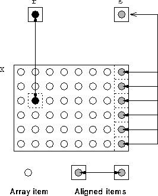

It is possible to align a scalar with a specific template location or series of template locations:
REAL, DIMENSION(6,8) :: X
REAL r, s
!HPF$ ALIGN r WITH X(3,2)
!HPF$ ALIGN s WITH X(*,8)
See Figure 36.

Figure 36: Visualisation of an Aligned Scalar
HPFF are thinking of withdrawing this feature.